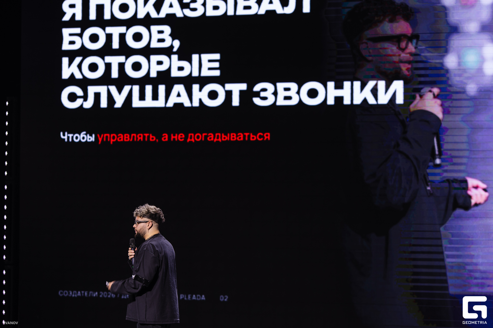

ДЕНИСЛЕУШИН
Помогаю бизнесу
работать с ИИ.
На практике.
Возможности искусственного интеллекта.CATALYST OS
СИСТЕМА ДЛЯ ВАШИХ ЗАДАЧ
Хватит говорить
про возможности.
Пора делать.
У каждой компании свои задачи. У нейросети — возможности. Между ними нужны контекст, инструменты и понятный рабочий процесс.
Я собираю такие решения и делюсь своими наработками в Catalyst OS. Чтобы вы могли взять готовую основу и адаптировать её под свой бизнес.
Мой Telegram ↗Начинаем с задачи
Что занимает время? Где теряются данные? Что команда делает руками?
Собираем решение
Инструменты, навыки и данные компании — в одном рабочем процессе.
Проверяем на практике
Рабочий результат, который можно оценить и повторить на новых данных.
Твою задачу
уже решали.
Готовые экраны, навыки и инструкции.
Твоя нейросеть берёт нужное по MCP
и собирает решение на твоих данных.
Неделя в цифрах
↗ 320 000 ₽ ещё не поступили. Проверьте неоплаченные заказы.
От заявки до сделки
↗ Воронка помогает увидеть, на каком этапе теряются клиенты.
Суть разговора — перед глазами
Клиент сравнивает два проекта. Обсудили бюджет, цель покупки и рассрочку. Договорились об онлайн-показе в четверг в 18:00.
Учебный пример интерфейса. Данные демонстрационные, к компании не подключён.
Делаю.
Делюсь. Обсуждаю.


Начните
с одной задачи.
Подключите библиотеку к своей нейросети.
Возьмите нужный инструмент. Проверьте на своих данных.
Один доступ для своих проектов и компании.
- Все 1 200+ наработок и обновления
- 370+ навыков и 100+ ИИ-сотрудников
- Подключение по MCP
- Решения для своей работы